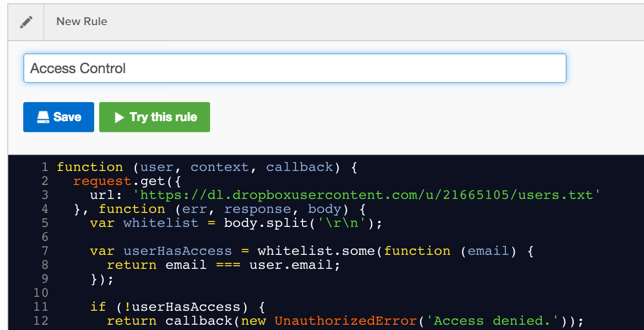
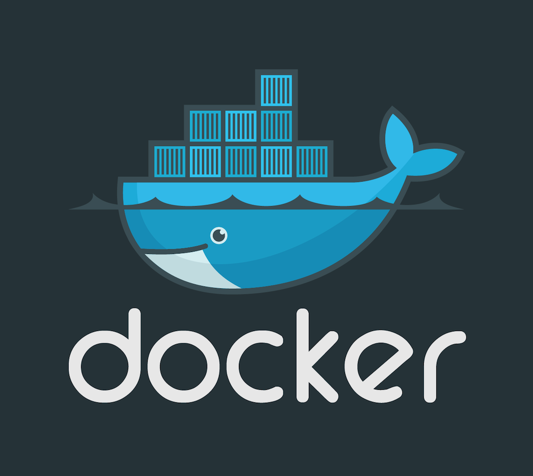
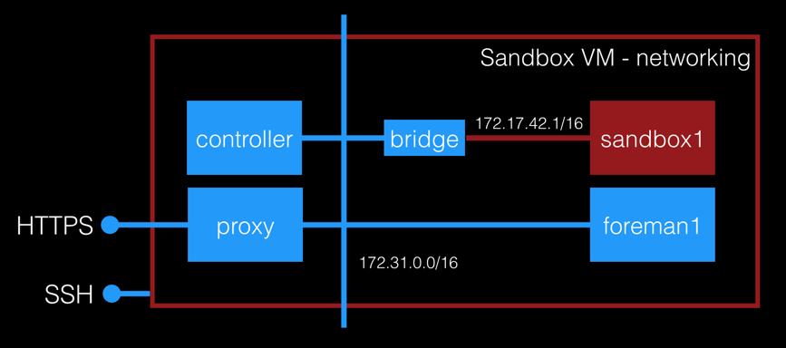

people are not evil
but some write evil code
running custom code
in multi-tenant systems

requires a sandbox
programming 101
JavaScript function closure
return function (cb) {
cb(null, { hello: 'world' });
}
(This is Node.js)
sandbox provides
data isolation
memory
network
and cpu usage
guarantees
sandbox viewed from space

CoreOS, ETCD, Docker, and Fleet
data isolation

container per tenant with
egress firewall
memory, cpu and other limits
linux cgroups
transient users
pam limits
programming 102
parameterized function
// HTTPS POST /tenant1?myname=Auth0
return function (context, cb) {
cb(null, 'Hello, ' + context.data.myname);
}
URL query paramers propagated to context
programming 201
C# via Edge.js
// HTTPS POST /tenant1?myname=Auth0
return function (context, cb) {
require('edge').func(function () {/*
async (dynamic context) => {
return "Hello, " + context.data.myname + "!";
}
*/})(context, cb);
}
[More on Edge.js]
streaming real-time logs
curl https://mysndbx.com/t1
--data-binary 'return function(cb) { console.log("Hello, world!"); cb(); }'
bunyan to kafka to http
curl https://mysndbx.com/logs/tenant/t1 | bunyan
[2014-11-25T03:20:44.027Z] INFO: server-foreman-t1-7574/1 on ip-172-31-0-65: Hello world (sandbox=1, offset=252217)
...